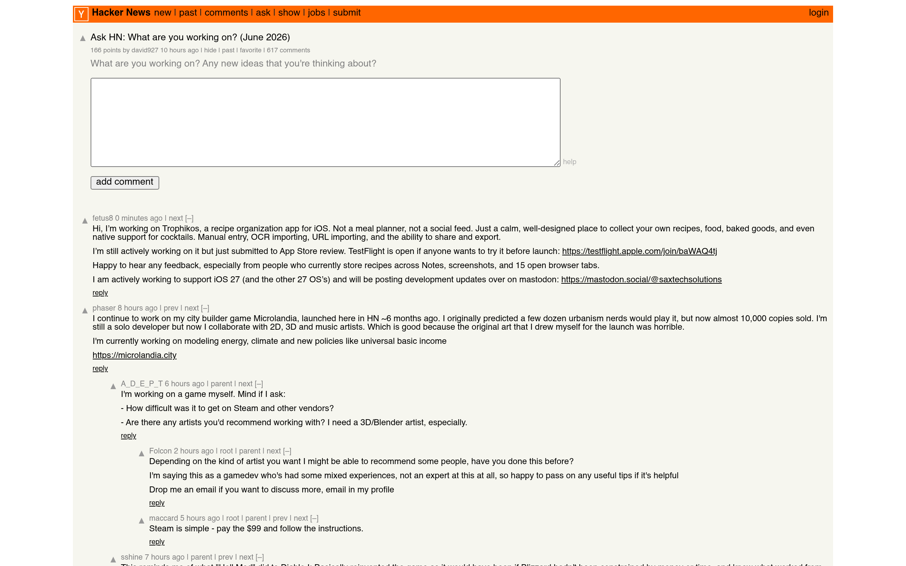

Y
Hacker News — Top 50
All history
Today
50 stories
Weeks
#1
Open site ↗
Iroh 1.0
1147 ▲
💬 348
by chadfowler
💬 Discuss on HN
#2
Open site ↗
A backdoor in a LinkedIn job offer
1101 ▲
💬 204
by lwhsiao
💬 Discuss on HN
#3
Open site ↗
Ask HN: Has anyone replaced Claude/GPT with a local model for daily coding?
943 ▲
💬 423
by cloudking
💬 Discuss on HN
#4
Open site ↗
TinyWind: A pixel pirate sailing game with real wind physics (380k+ kms sailed)
803 ▲
💬 152
by tinywind
💬 Discuss on HN
#5
Open site ↗
CrankGPT
577 ▲
💬 222
by rishikeshs
💬 Discuss on HN
#6
Open site ↗
Hetzner Price Adjustment
421 ▲
💬 576
by tuhtah
💬 Discuss on HN
#7
Open site ↗
Banned Book Library in a Wi-Fi Smart Light Bulb
355 ▲
💬 183
by sohkamyung
💬 Discuss on HN
#8
Open site ↗
Fox to buy Roku
316 ▲
💬 390
by thm
💬 Discuss on HN
#9
Open site ↗
Typst 0.15.0
313 ▲
💬 85
by schu
💬 Discuss on HN
#10
Open site ↗
Salesforce to Acquire Fin (formerly Intercom) for $3.6B
304 ▲
💬 223
by colesantiago
💬 Discuss on HN
#11
Open site ↗
My Homelab AI Dev Platform
303 ▲
💬 52
by rsgm
💬 Discuss on HN
#12

Open site ↗
Copper transport drug restores memory and clears toxic Alzheimer's proteins
296 ▲
💬 108
by bookofjoe
💬 Discuss on HN
#13
Open site ↗
Hetzner increased dedicated server prices 3-4x
272 ▲
💬 2
by enescakir
💬 Discuss on HN
#14
Open site ↗
I Could've Rickrolled the FIFA World Cup. All I Needed Was My ID
221 ▲
💬 73
by BobDaHacker
💬 Discuss on HN
#15
Open site ↗
I Love the Computer
218 ▲
💬 131
by speckx
💬 Discuss on HN
#16
Open site ↗
Anthropic's Safety Superpower
209 ▲
💬 187
by swolpers
💬 Discuss on HN
#17
Open site ↗
The time the x86 emulator team found code so bad they fixed it during emulation
207 ▲
💬 58
by paulmooreparks
💬 Discuss on HN
#18
Open site ↗
US battery manufacturing output continues to break records
200 ▲
💬 164
by epistasis
💬 Discuss on HN
#19
Open site ↗
Game Engine White Papers: Commander Keen
200 ▲
💬 65
by mfiguiere
💬 Discuss on HN
#20
Open site ↗
John Carmack on Fabrice Bellard
193 ▲
💬 118
by apitman
💬 Discuss on HN
#21
Open site ↗
Peopleless economy? Not technically impossible
175 ▲
💬 299
by l0new0lf-G
💬 Discuss on HN
#22
Open site ↗
What job interviews taught me about Kubernetes
174 ▲
💬 128
by chmaynard
💬 Discuss on HN
#23
Open site ↗
Microsoft turns to AWS as GitHub faces AI capacity crunch
150 ▲
💬 68
by ilreb
💬 Discuss on HN
#24
Open site ↗
How TimescaleDB compresses time-series data
148 ▲
💬 17
by lkanwoqwp
💬 Discuss on HN
#25
Open site ↗
Show HN: I wrote a C++ ray tracer from scratch without AI
147 ▲
💬 61
by martiano
💬 Discuss on HN
#26
Open site ↗
Google Flight Simulator
145 ▲
💬 47
by bookofjoe
💬 Discuss on HN
#27
Open site ↗
Why I email complete strangers
144 ▲
💬 62
by karakoram
💬 Discuss on HN
#28
Open site ↗
Can Europe train a frontier AI model on the compute it owns?
133 ▲
💬 244
by smashini
💬 Discuss on HN
#29
Open site ↗
Around 200 Stanford students walk out as Google CEO takes stage
132 ▲
💬 30
by pera
💬 Discuss on HN
#30
Open site ↗
How memory safety CVEs differ between Rust and C/C++
131 ▲
💬 162
by nicoburns
💬 Discuss on HN
#31
Open site ↗
Claude Corps
129 ▲
💬 85
by Mustan
💬 Discuss on HN
#32
Open site ↗
Boot Naked Linux
112 ▲
💬 50
by abnercoimbre
💬 Discuss on HN
#33
Open site ↗
Amazon Announces Multibillion-Dollar Data Center in Missouri
106 ▲
💬 92
by thelonelyborg
💬 Discuss on HN
#34
Open site ↗
US Air Force B-52 bomber crashes after takeoff, Edwards Air Force Base says
98 ▲
💬 91
by tartoran
💬 Discuss on HN
#35
Open site ↗
Show HN: machine0 – Persistent NixOS VMs You Control from the CLI
84 ▲
💬 34
by bwm
💬 Discuss on HN
#36
Open site ↗
Humanity isn't ready for the coming intelligence explosion
84 ▲
💬 212
by andsoitis
💬 Discuss on HN
#37
Open site ↗
Fox Is Buying Roku
79 ▲
💬 8
by simonebrunozzi
💬 Discuss on HN
#38
Open site ↗
San Francisco Weighs PG&E Takeover Amid Soaring Utility Costs
72 ▲
💬 78
by cdrnsf
💬 Discuss on HN
#39
Open site ↗
OpenAI Losses Increased Nearly 8X in 2025, with Spending Hitting $34B
67 ▲
💬 29
by spking
💬 Discuss on HN
#40
Open site ↗
Reviews have become expensive, rewrites have become cheap
63 ▲
💬 50
by arzh2
💬 Discuss on HN
#41
Open site ↗
Show HN: Veterinarian turned founder, AI lawn diagnosis
63 ▲
💬 55
by andrewbr
💬 Discuss on HN
#42
Open site ↗
Show HN: Garden of Flowers – an archive of pictorial typography before ASCII art
63 ▲
💬 11
by california-og
💬 Discuss on HN
#43
Open site ↗
Anthropic flies staff to D.C. to clean up White House fight
55 ▲
💬 68
by dstala
💬 Discuss on HN
#44
Open site ↗
Vance: Iran can have access to $300B reconstruction fund
54 ▲
💬 29
by GreenSalem
💬 Discuss on HN
#45
Open site ↗
Launch HN: Drafted (YC P26) – Models for residential architecture
53 ▲
💬 58
by PrimalNick
💬 Discuss on HN
#46
Open site ↗
Techno-libertarians are flocking to the Caribbean
51 ▲
💬 51
by andsoitis
💬 Discuss on HN
#47
Open site ↗
America has lost its war with Iran
48 ▲
💬 33
by testing22321
💬 Discuss on HN
#48
Open site ↗
Swedish parliament abolishes permanent residence visas for migrants
48 ▲
💬 75
by CGMthrowaway
💬 Discuss on HN
#49
Open site ↗
Applying Brevity and Language Efficiency in Prompt Engineering
39 ▲
💬 18
by pyeri
💬 Discuss on HN
#50
Open site ↗
US Government Reportedly Allowing Federal Data Center Rules to Expire
37 ▲
💬 7
by 01-_-
💬 Discuss on HN